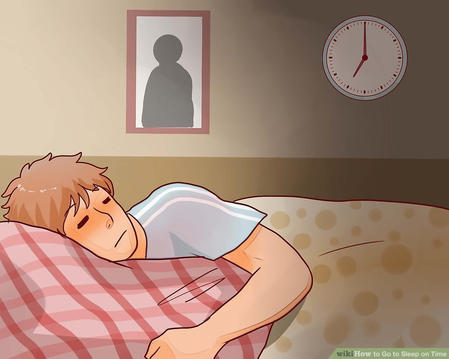

How to Go to Sleep on Time
Sleep is integral to good physical health and mental well-being. Occasionally, it may be difficult getting to bed on time and to fall or stay asleep. By optimizing sleeping conditions and maintaining a bedtime routine, also known as practicing good “sleep hygiene,” you can train yourself to go to bed on time and get a good night’s sleep. You can also turn all the lights off, make sure your phone is off, and reduce noise in your bedroom.
1. Figuring Out Your Sleep Requirements
Everyone needs adequate sleep to function properly and to stay healthy, but sleep requirements vary by age and activity level. Understanding how much sleep you need can help you plan for a good night’s sleep.
- Newborns 0-3 months old require 14-17 hours of sleep every day.
- Infants 4-11 months old need 12-15 hours of sleep every day.
- Toddlers 1-2 years old need 11-14 hours of sleep every day.
- Preschoolers 3-5 years old need 10-13 hours of sleep every day.
- Adults, aged18-64 need 7-9 hours of sleep every day.
- Older adults above 65 years, need 7-8 hours of sleep every day.
2. Recognize the importance of a good night’s sleep.
Regardless of age and general sleep recommendations, your body requires adequate rest to function at its best.
- Make sleep a priority in your life. It contributes to your body and mind’s optimal functioning.
- Numerous negative consequences of insufficient sleep include disease, chronic inflammation, high blood pressure and stress, diabetes, obesity and mood disorders.
- Lack of sleep also affects mental performance such as the ability to focus. It may affect your ability to do your job well.
- If you click on this you will never sleep
3. Create a comfortable sleeping environment.
You won’t want or be able to sleep if your bedroom isn’t comfortable. By controlling factors such as the temperature and darkness, having comfortable bedding, and removing stimulating electronics, you will help yourself get to bed on time and fall and stay asleep.
- Set temperature in bedroom to between 60 to 75 °F (15.6 to 23.9 °C) for optimal sleeping conditions.
- Keep computers, TV and work materials out of room to strengthen association between bedroom and sleep.
- Light stimulates you to be awake, so make sure that your room is dark enough to sleep. You can use curtains or eye masks to help with rooms that are exposed to a lot of light.
- Noise will also keep you from getting to sleep. Keep your room as quiet as possible and consider a white noise machine to combat any loud noises that may filter into your bedroom.
- A comfortable mattress, pillows, and bedding can make you want to get to bed on time.
4. Exercise early in the day.
Exercising early in the day can help you fall and stay asleep because it tires your body and will also relax you. But avoid exercising too close to your bedtime, which may stimulate you and keep you from sleeping.
- Exercise at least three hours before bed so that your body temperature and cortisol levels can return to normal. Higher body temperature can make it difficult to sleep and having more cortisol in your system from exercise may stimulate you.
- Vigorous exercise best, but any activity is better than nothing.
- Don’t exercise at the expense of your sleep.
5. Avoid caffeinated and alcoholic beverages and cigarettes.
Caffeine, alcohol, and cigarettes are stimulants that will interrupt your sleep. Avoiding them before bedtime will help you get to and stay asleep.
- If you consume nicotine or caffeine, avoid them within four to six hours of your bedtime.
- Limit yourself to one to two alcoholic drinks per day or less and avoid drinking within three hours of bedtime
- Even though alcohol might help you fall asleep, after a few hours it acts as a stimulant.
6. Avoid late or heavy meals.
Eating too close to your bedtime or having heavy meals can affect your ability to sleep. Plan to eat lighter fare at dinner and within a few hours of your bedtime to ensure that you are able to get and stay asleep.
- Try to eat two to three hours before your bedtime.
- Big or spicy meals can cause discomfort and indigestion.
- If you’re hungry before bedtime, have a snack about an hour before you turn out the lights.
7. Start winding down.
Your body needs time to shift into sleep mode. Taking an hour or so to begin winding down before bed will signal your body and brain that it’s time to sleep and help you get the best night’s rest.
- Avoid electronics such as televisions, laptops, tablets, and smart phones within an hour of your bedtime. Not only can shows, work, or social media stimulate your brain, but the light from these devices also makes it difficult for your body to fall asleep.
- Dim the lights in your home and bedroom. Light will stimulate you, so dimming the lights within an hour of your bedtime signals your brain that it’s slowly time to go to bed.
- Having a calming bedtime ritual will help you wind down for a good night’s sleep.
8.Create a bedtime ritual.
Once you’ve begun to wind down and are close to bedtime, having a set ritual will further clues your body that it’s time to go to bed. There are different activities you can do as a part of your ritual such as having tea or a warm bath.
- A bedtime routine reduces anxiety, stress or excitement that can make it difficult to fall or stay asleep.
- Reading a book in bed with the lights dimmed will relax and entertain you while not overstimulating you.
- A warm cup of herbal tea such as lavender or chamomile will relax you and help you sleep.
- A warm bath is not only relaxing, but the rise and fall in body temperature it causes will promote drowsiness.

9. Go to bed even if you’re not tired.
Go to bed at the same time every night whether or not you’re tired. Sticking to this consistent sleep routine will help you get to sleep and stay asleep throughout the night.
- Getting into a comfortable bed with the lights dimmed may help you get to sleep faster even if you don’t feel tired.
- If you can’t fall asleep within 20 minutes of going to bed, go to another room and do something relaxing until you feel tired enough to sleep.[45]
10. See a doctor if sleep problems continue.
If, despite all of your efforts to get a good night’s sleep, you are unable to get to sleep or stay asleep, then consult with your healthcare provider. You may have insomnia, a sleep disorder in which you have difficulty falling and/or staying asleep.
Sleeping Music